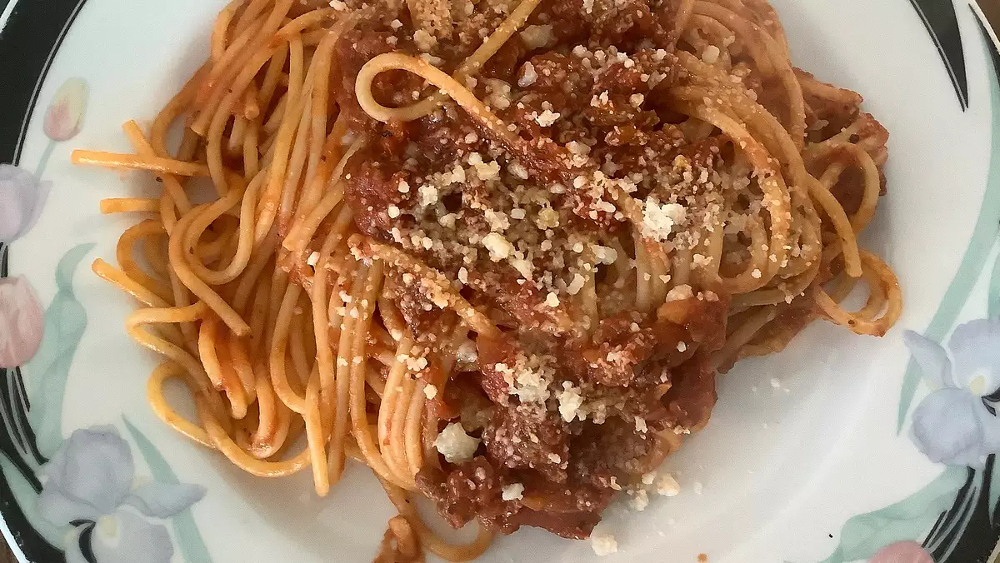

Spaghetti Sauce with Ground Beef

The best Spaghetti sauce with ground beef you will ever taste
One thing that most people take for granted in today's world is spaghetti! If you are like me, then you will be able to relate to the fact that
store bought spaghetti sauce just doesn't hit the spot; when a big helping of spaghetti is what you're craving!
This recipe will require 10 minutes of preparation time and 1 hour and 5 minutes of cook time. That is a total time> of 1 hr and 15 mins.
Ingredients
- 1 pound ground beef
- 1 medium onion, chopped
- 4 cloves garlic, minced
- 1 small green bell pepper, diced
- 1 (28 ounce) can diced tomatoes
- 1 (16 ounce) can tomato sauce
- 1 (6 ounce) can tomato paste
- 2 teaspoons dried basil
- 1 teaspoon salt
- 1/2 teaspoon ground black pepper
Directions
Step One:
Combine ground beef, onion, and green pepper in a large saucepan over medium-high heat
- Cook and stir until meat is browned and crumbly, and vegetables are tender,about 5-7 minutes.
- Drain grease.
Step Two:
Stir diced tomatoes, tomato sauce, and tomato paste into the pan.
- Season with oregano, basil, salt, and pepper
- Simmer spaghetti sauce for 1 hour, stirring occasionally.